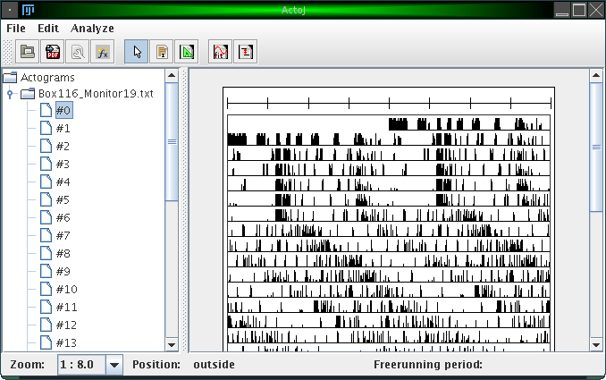
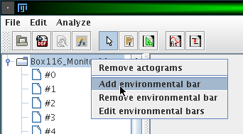
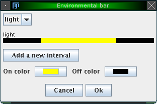
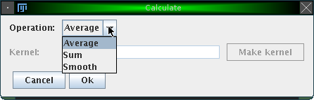
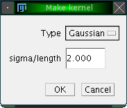
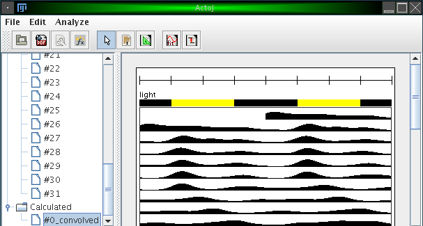
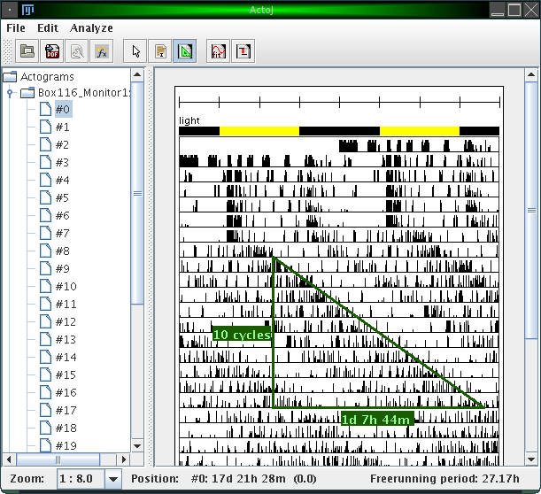
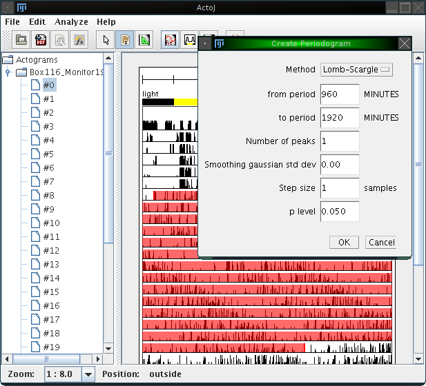
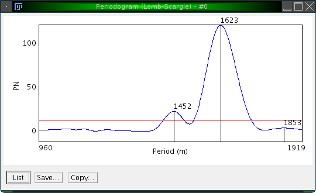

To open an actogram file, choose "File"&rarr"Open" from the menu bar or click on the "Open" icon in the tool bar. A dialog comes up which lets you choose one or multiple files. Upon your selection, the first selected file will then show up in a preview window, and you can enter some parameters regarding the files to be opened:
Here is a screenshot of the main window of ActogramJ:

The left hand side consists of a simple browser, which shows a folder for each file you loaded. The contents of each folder are the individual actograms of the corresponding file, numbered consecutively. In this browser, you can select one or more actograms, which will then be displayed in the canvas on the right hand side. To remove a folder (unload a file), you can right-click on it and choose "Remove actograms".
At the bottom of the window there's a status bar. Amongst other information, it displays the current mouse pointer position while you move the mouse over an actogram.
The most obvious thing you will want to change is the zoom level which defines to which details the displayed actograms are rendered. You can change the zoom level using the drop down menu in the status bar:
A zoom value of "1 : 2.0" means for example that the resulting actogram will be half of the size of the original actogram. In this case, values will be averaged pairwise, i.e. the first and the second value, the third and the fourth value, etc.
Several other display settings can be adjusted. These are the number of plots shown per line, the upper limit of the displayed activity values, the maximum number of actograms drawn in a row, the number of ticks in the calibration bar, the width to heigth ratio of the displayed actograms and the units used for displaying the freerunning period in the status bar:

You can show additional bars for each actogram, which indicate the state of external influences like light or temperature. To do so, right-click on a folder in the actogram browser and choose 'Add environmental bar':

A window opens which lets you adjust the name of the external influence and the intervals where this influence is either on or off:

By clicking on 'Add a new interval', you can specify various intervals in which the external variable is on or off. Additionally, you can change the color for the 'on' and 'off' state. The figure above shows e.g. an external influence 'light' with an 'on' interval from 360 to 1080 (from an entire period length of 1440 minutes, conforming to the example introduced earlier). The color for the 'on' state was changed to yellow. The result is illustrated in the following figure:

It is possible to export one or more actograms to pdf. To do so, click on the menu item "File"&rarr"Export PDF" or on the corresponding icon in the tool bar. This will render all actograms which are shown on the right canvas into a single pdf file. All bars, like the calibration bar and optionally environmental bars, will be exported, too. In particular, the currently used zoom level will be used to render the actograms into pdf. To create a file with higher resolution, you may want to adjust the zoom level before.
Simple transformations and calculations can be applied to actograms. These transformations will always be applied to all actograms shown in the actogram canvas.
To envoke calculations, click on "Analyze"&rarr"Calculate" or on the corresponding icon in the tool bar. The following dialog will appear:

The following operations are currently available:

Two methods are available, to create either a Gaussian kernel with a specified standard deviation or a uniform kernel with a given length. Both methods represent a form of sliding window averaging.The resulting actograms of such calculations are stored in a seperate folder "Calculated" in the browser. The figure below shows the result of applying the "Average" operator with an automatically generated Gaussian kernel with standard deviation (sigma) of 100.

The freerunning period can either be determined automatically or manually. This section describes how to do so manually.
ActogramJ can currently be in three modes. These modes are "pointing" (the default), "selecting" or "freerunning period". Enter now the "freerunning period" mode by selecting "Edit"&rarr"Period tool" from the menu or click on the corresponding icon in the tool bar. You can now draw a triangle by dragging the mouse over the corresponding area in an actogram:

Vertically, the number of cycles is indicated. Horizontally, the time delay is indicated. The freerunning period can be seen in the status bar (27.17h) in the figure above).
After selecting a region, choose "Analyze"&rarr"Periodogram" from the menu or click on the corresponding icon in the tool bar. A dialog opens, which asks for a few parameters:

Using the actogram, the interval and the parameters as shown above, the following periodogram is calculated:

Three peaks are highlighted, and it is easy to confirm that the desired peak is the one at 1625.
The p value level for the actogram is displayed as a red line.
Both periodogram values and p values can be shown as a list (by clicking on 'List'), and saved as an Excel sheet for further analyzis with third-party software.
Sometimes one wishes to compare several actograms, where one may show an overall high activity level while the other one has an overall low activity. To facilitate comparison, one would like to normalize the overall activity.
This can be done by clicking on "Analyze"&rarr"Normalize". Like the calculation functions, this works on all displayed actograms. A dialog opens which asks you for the on which should serve as a reference actogram. From this actogram, the overall activity is calculated. All other actograms are then scaled such that their overall activity matches the one of the reference actogram.